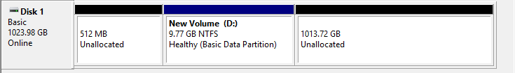
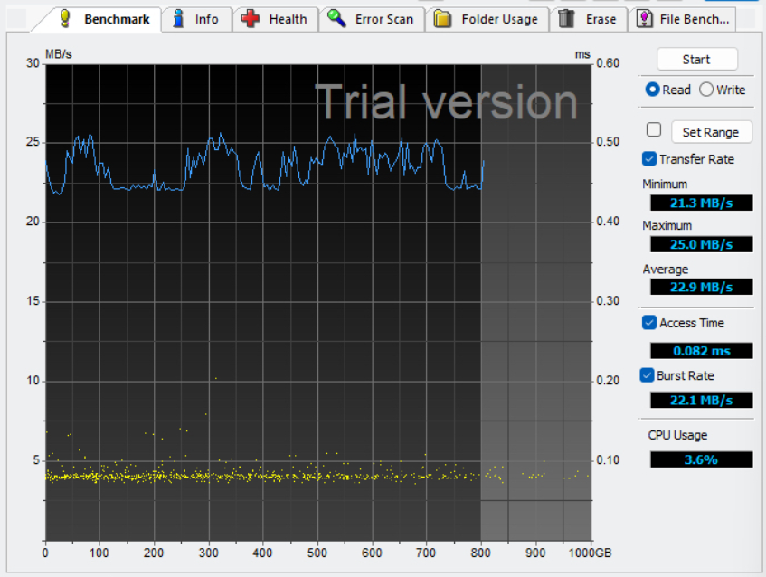

How I created an NVMe storage controller on an Artix 7 FPGA
The Goal
I started this project with the goal of learning more about PCIe and NVMe. I wanted to see if I could implement a simple NVMe controller on an Artix 7 FPGA. The idea was to have a small piece of hardware that could be enumerated by a normal operating system as an NVMe device, allowing me to run the stock NVMe driver, and read/write sectors.
The development board I used is an Artix 7 75T. The hard part is not implementing the controller logic, but rather finding a way to actually store data on the disk given the limited resources of the FPGA.
Artix 7 limmitations and how I got around them
One of the biggest problems I faced in this project, was the resource limmitation on the Artix 7. A real NVMe controller can treat the NAND or other backing storage as a large addressable media space, while using relatively small amounts of on-chip memory for caching, queues, and intermediate data. The Artix 7 75T on the other hand has a very limmited ammount of block RAM. There simply was not enough local memory to hold any data above 64KB since I was already using a large portion of that BRAM for the controller logic.
To solve this problem, I had to shift to a hardware/software co-design using an FT601 transport layer to passthrough I/O from the fpga to a second machine. Whenever the host NVMe driver would issue an I/O secotor read/write, the fpga would forward the request to the second machine (slave). A program on the slave would handle storing that data in an image file.
Results

